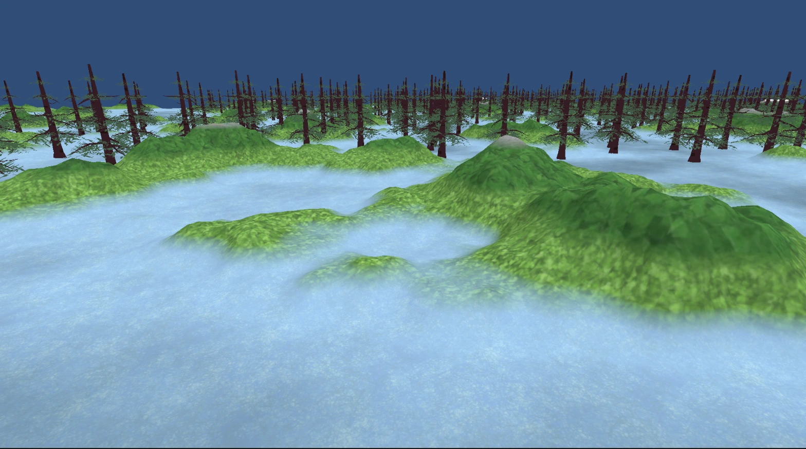
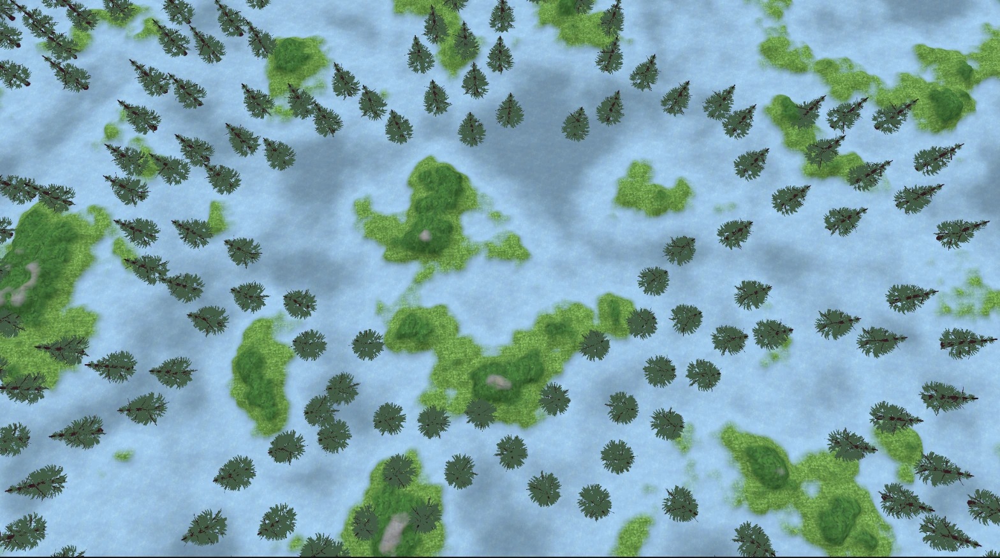
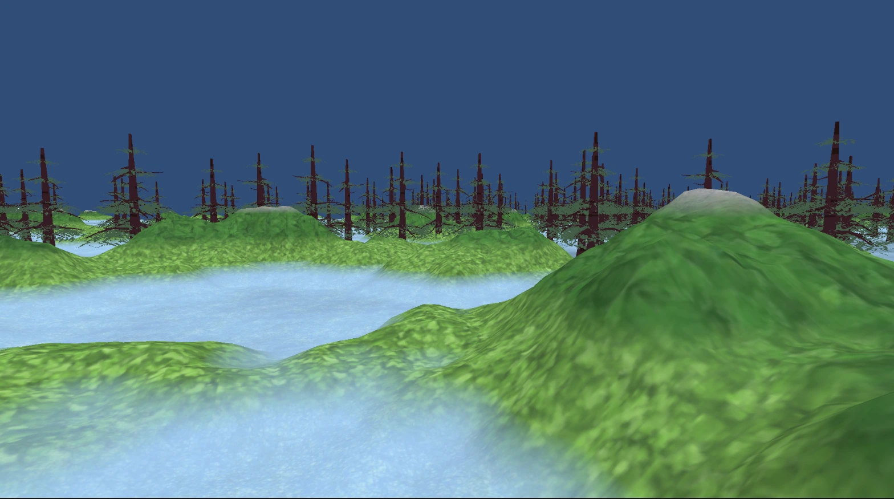

tinywagon
MADE WITH
MADE WITH

As part of a long-term project I’m developing, I created a fully procedural mesh-based world generation system. This system dynamically generates infinite biomes, varied foliage, randomly placed structures, NPC spawns, and a convincing 3D collision system. All working together to bring the world to life!

Taking inspiration from other games that feature procedural
generation. I've developed this algorithm with being
seed-based in mind. Meaning that if the correct number
value is stored, then the
same world can be generated every time. With this in
mind, we can create a living, breathing world. With a vast
variety of diverse landscapes, biomes, and generated structures.
It's as simple as changing a few values!
To create convincing natural landscapes, this algorithm utilizes
layering
perlin noise
and
poisson disk sampling
to accomplish breathtaking landscapes that are different yet
consistent every time, along with foliage objects that are spread
out in a way that looks very organic.
